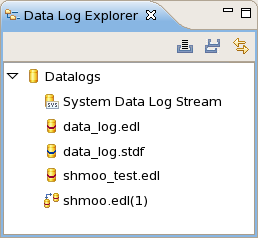
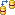

Data Log Explorer view
The Data Log Explorer view is the part of the Integrated Result Tool where you manage the data sources - data log files and the system data log stream.
The view is opened as part of the default Result perspective, or on its own using the command.

The main area of the view lists all loaded data stores (the system data log stream, all loaded data log files, and all data stores created by merging or correlating others). The view has a toolbar and a shortcut menu accessed by right-clicking in the main area.
Data store icons
Date stores have different icon, depending on their type:
- Folder for all data stores (not itself a data store)
- System data log stream
- EDL data log
- STDF data log

Correlation data store (created by correlating two or more other data stores)
Toolbar
The toolbar of the view has two buttons:
 Load: Clicking this button has the same effect as the Load menu
command, described below.
Load: Clicking this button has the same effect as the Load menu
command, described below. Unload All: Clicking this button has the same effect as the Unload
All menu command, described below.
Unload All: Clicking this button has the same effect as the Unload
All menu command, described below.- Link with Editor: If this button is activated, clicking any data store in the Data Log Explorer automatically brings the data navigation view for that data store to the front. (If there is no open data navigation view for a data store, clicking the data store does not do anything.)
Shortcut menu
The shortcut menu of the view includes these commands:
- Open: Opens the selected data log or stream as an additional tabular view in the data navigation area of the Result perspective.
- Show in Stream Data View: Displays the system data log stream in the
Stream data view.
This command is available only for the system data log stream.
- Refresh: Updates the system data log stream
display with the latest logged data when it is paused (see below), but does not turn on
automatic updating again, like Resume does.
This command is available only for the system data log stream.
- Pause: Stops automatic updating of tables
displaying the system data log stream.
This command is available only for the system data log stream.
- Resume: Restarts automatic updating of the
system data log stream.
This command is available only for the system data log stream.
- Clear: Deletes the current system data log data from the Integrated
Result Tool and clears the system event stream.
This command is available only for the system data log stream.
- Save and Clear: Displays a standard Save dialog in which you can save
the current system event stream as an EDL file. After you have saved the file, all current
entries from the system data log stream display in the Integrated Result Tool are removed and
the system event stream is cleared.
This command is available only for the system data log stream.
- Correlate: Opens the Correlate dialog in which you can select one or more data sources to correlate with the selected one. See Correlating data logs for more information on correlating data logs.
- Merge: Opens the Correlate dialog in which you can select one or more
data sources to merge with the selected one. See Merging data logs for more information
on merging data logs.
This command is not available for the system data log stream.
- Load: Opens a standard file open dialog in which you can select additional data log files to load into the Data Log Explorer.
- Unload: Removes the selected data log from the Data Log Explorer. The
data log file on disk remains unaffected by this.
You cannot unload the system data log stream.
- Unload All: Removes all data logs (except the system data log stream) from the Data Log Explorer, as if you had chosen Unload for each of them.
- Export: Opens the Export Data Log to CSV dialog which lets you configure which data logs and summary data you want to export and initiate the export process. See Exporting data logs for more information on CSV exports.
Functional changes
- Introduced in SmarTest 7.2.0
- SmarTest 7.2.2: New "Link with Editor" button.
- SmarTest 7.2.2: New Save and Clear shortcut menu command.
- SmarTest 7.2.2: The Clear shortcut menu command now also clears system event stream.